|
Un triángulo ABC, verifica entre uno de sus lados, a, la mediana
correspondiente a ese lado ma, y el radio del círculo
Probar si es cierto o no que aparte de los triángulos rectángulos en A, hay, al menos otro. |
|
Propuesto por Juan Bosco Romero Márquez, dedicado a Murray S. Klamkin. |
Solución de Francisco Javier García Capitán
Solución:
Usaremos Mathematica para efectuar los cálculos y al final incluiremos un applet de CabriJava con la solución. El código fuente de Mathematica puede descargarse aquí. Mostraremos que existe una infinidad de triángulos no rectángulos que cumplen la relación.
Comenzamos por escribir fórmulas para el semiperímetro s, el área S, el radio R de la circunferencia circunscrita y la mediana ma correspondiente al lado a.
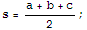
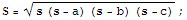
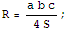
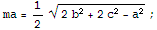
Ahora usamos la función Factor para obtener una expresión conveniente del enunciado.
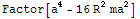
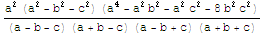
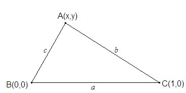
Vemos que, efectivamente, si el triángulo es rectángulo en A, la fórmula es cierta.Para hallar los triángulos que anulan el otro factor del numerador, consideramos que nuestro triángulo tiene su vértice B en el origen de coordenadas, el vértice C en el eje de abscisas y el vértice A en un punto variable (x,y). Realmente la única limitación que hemos impuesto es a=1, aunque dicha limitación será fácil de salvar.
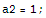
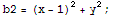
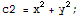
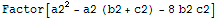
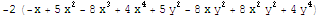
Para representar esta curva, en la que x e y aparecen relacionadas de forma implícita, usamos ImplicitPlot:
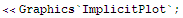
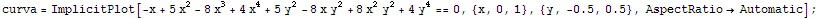
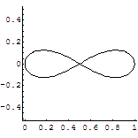
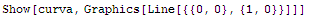
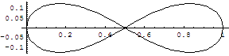
Para conseguir esta figura con Cabri Géomètre expresamos y en función de x de manera explicita:
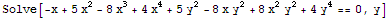
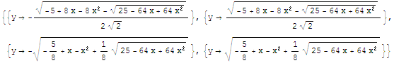
La expresión que nos sirve es la última de las cuatro, que tal como se la tenemos que introducir a Cabri es:
sqrt(-(5/8) + a - a^2 + (1/8)*sqrt(25 - 64*a + 64*a^2))
(recordemos que la Calculadora de Cabri comienza a nombrar las variables como a, b, c, ...).